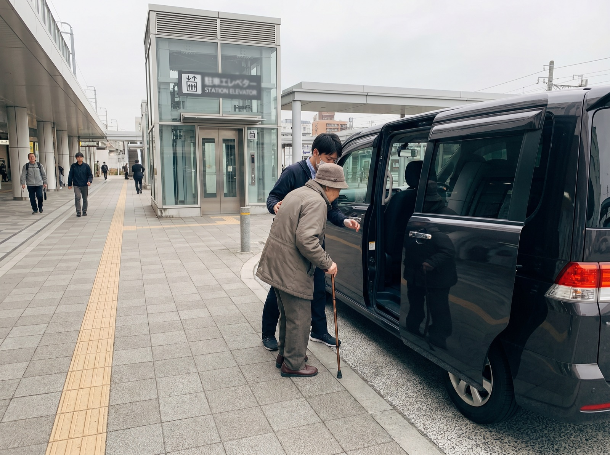

東京から富士山への貸切車はどう組む？ルート、時間配分、向いている人
ルート順、停車時間、費用に影響する要素、貸切車が向いている状況。
記事を見る
日本の家族旅行はどう組む？テーマパーク、ホテル、少ない乗換の考え方
子ども向けホテル、テーマパーク、移動負担、雨天代替案。
記事を見る
日本の温泉旅館予約チェックリスト：部屋、食事、貸切風呂、交通
部屋タイプ、食事、貸切風呂、交通、取消条件の確認。
記事を見る
シニア同行の日本旅行はどう組む？歩行量、ホテル位置、貸切車の考え方
歩行量を抑える行程、ホテル位置、貸切車、休憩場所、相談前チェック。
記事を見る
日本の観光施設と飲食店予約はどう組む？チケット、待ち時間、予約開始日
人気チケット、予約開始日、待ち時間、飲食店ルール、多言語連絡。
記事を見る